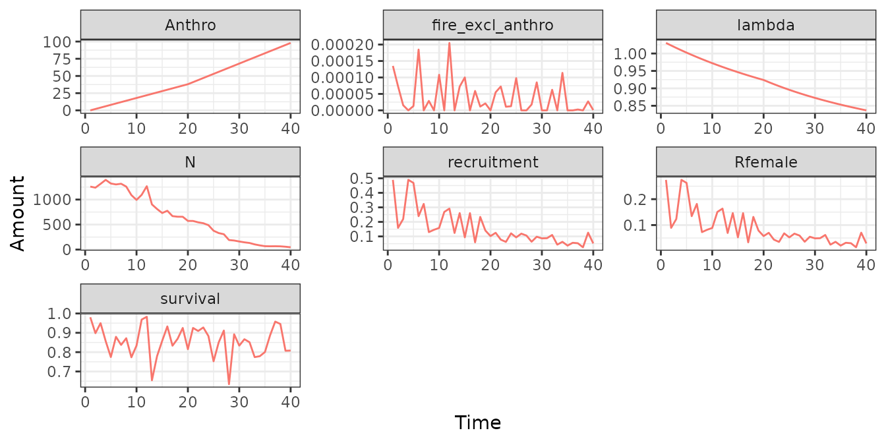
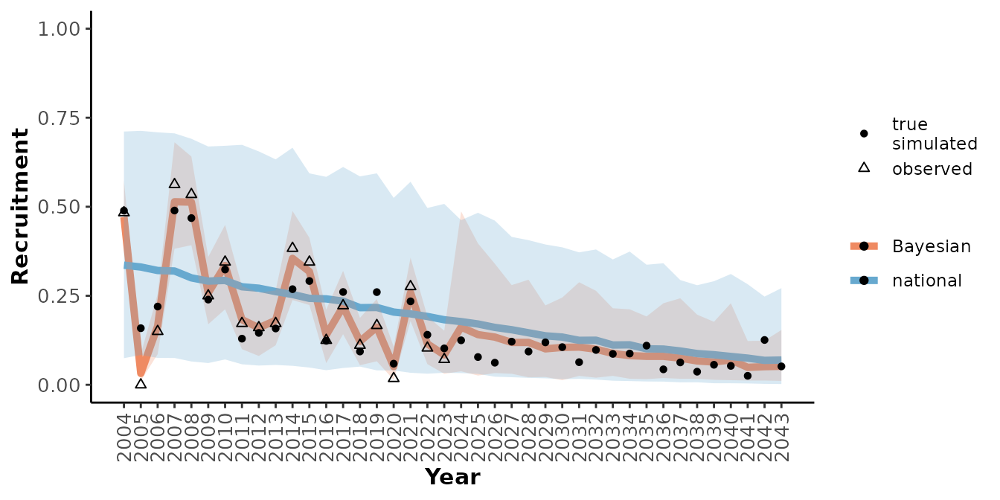
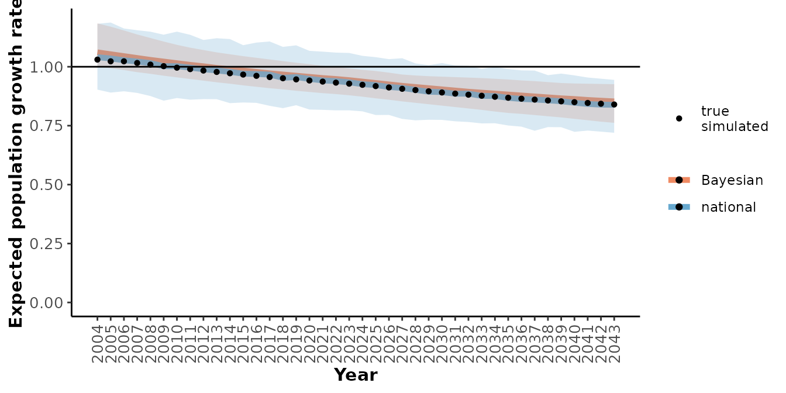
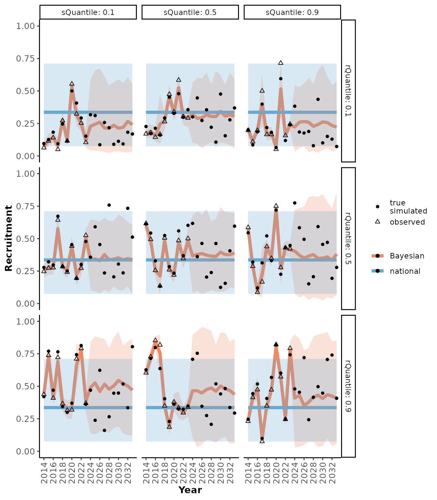
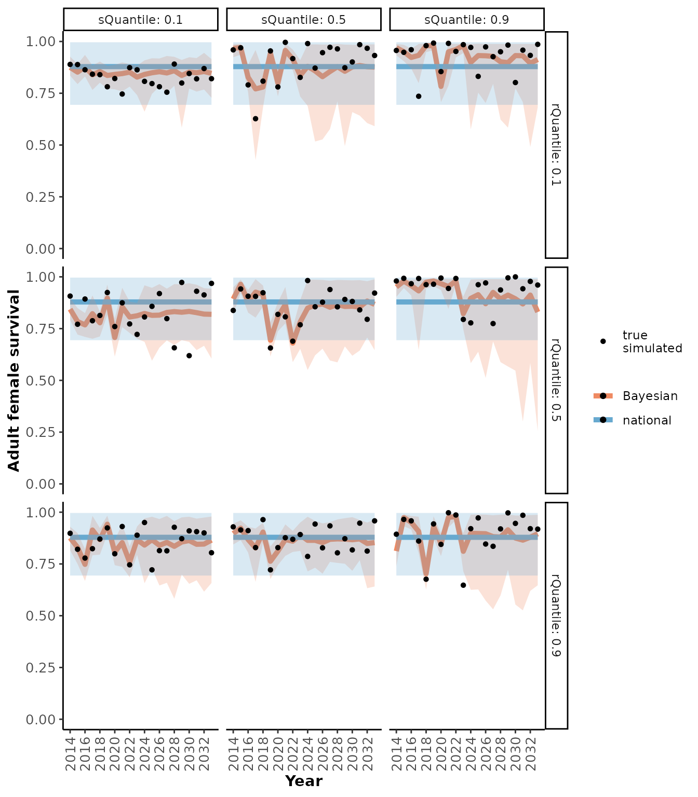
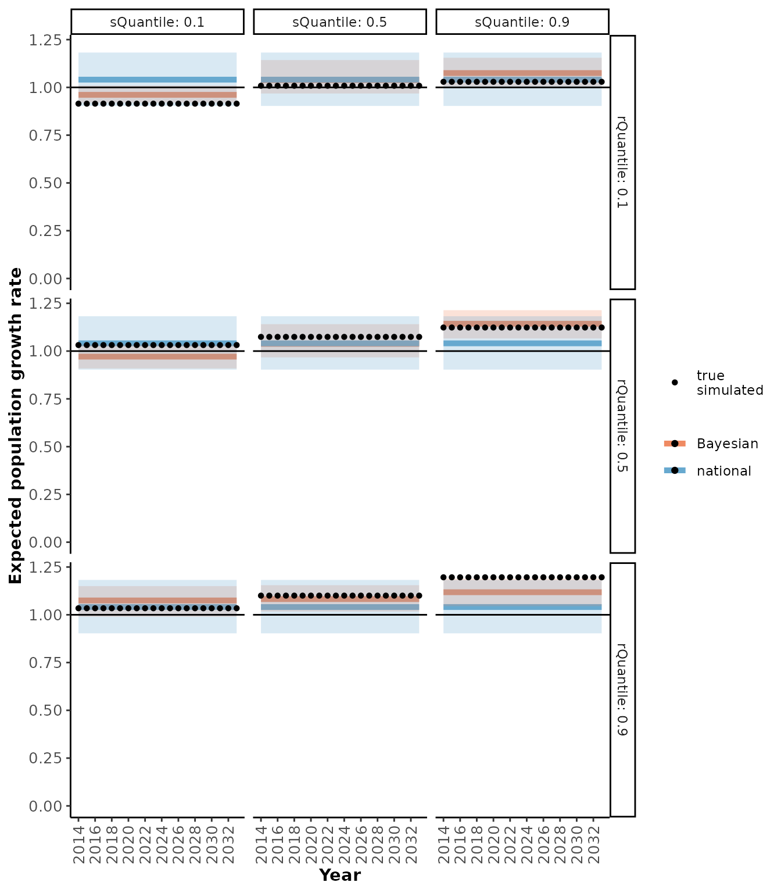

Bayesian Demographic Projection
Source:vignettes/BayesianDemographicProjection.Rmd
BayesianDemographicProjection.Rmd
library(caribouMetrics)
library(ggplot2)
library(dplyr)
#>
#> Attaching package: 'dplyr'
#> The following objects are masked from 'package:stats':
#>
#> filter, lag
#> The following objects are masked from 'package:base':
#>
#> intersect, setdiff, setequal, union
theme_set(theme_bw())caribouMetrics provides a simple Bayesian population model that integrates prior information from Johnson et al.’s (2020) national analysis of demographic-disturbance relationships with available local demographic data to project population growth. In addition, methods are provided for simulating local population dynamics and monitoring programs.
The model is described in Hughes et al. (2025) Section 2.5.
Using real observed data
caribouMetrics includes example csv files of collar survival and calf cow count data as well as disturbance data that can be used as templates for the format for observed data.
survObs <- read.csv(system.file("extdata/simSurvData.csv", package = "caribouMetrics"))
ageRatioObs <- read.csv(system.file("extdata/simAgeRatio.csv", package = "caribouMetrics"))
distObs <- read.csv(system.file("extdata/simDisturbance.csv", package = "caribouMetrics"))
survObs %>% group_by(Year) %>%
summarise(n_collars = n(),
n_die = sum(event)) %>%
ggplot(aes(Year))+
geom_line(aes(y = n_collars))+
geom_col(aes(y = n_die))+
labs(y = "Number of Collars (line) and deaths (bars)")

Plotting the data shows that the collaring program included 60 individuals with collars being replenished every 3 years over a monitoring period of 15 years. Calf cow surveys typically counted ~150 cows and ~50 calves. There is no disturbance in the years of the observation data but disturbance is expected to increase quickly in the future.
These data sets can be supplied to caribouBayesianPM()to
project the impact on the caribou population as disturbance increases
over the next 20 years.
mod_real <- caribouBayesianPM(survData = survObs, ageRatio = ageRatioObs,
disturbance = distObs,
# only set to speed up vignette. Normally keep defaults.
Niter = 150, Nburn = 100)
#> using Binomial survival model
str(mod_real, max.level = 2)
#> List of 2
#> $ result:List of 6
#> ..$ model :List of 8
#> .. ..- attr(*, "class")= chr "jags"
#> ..$ BUGSoutput :List of 25
#> .. ..- attr(*, "class")= chr "bugs"
#> ..$ parameters.to.save: chr [1:13] "S.annual.KM" "R" "Rfemale" "pop.growth" ...
#> ..$ model.file : chr "/tmp/Rtmpgc1Lv4/JAGS_run.txt"
#> ..$ n.iter : num 150
#> ..$ DIC : logi TRUE
#> ..- attr(*, "class")= chr "rjags"
#> $ inData:List of 3
#> ..$ survDataIn : tibble [35 × 16] (S3: tbl_df/tbl/data.frame)
#> ..$ disturbanceIn:'data.frame': 35 obs. of 6 variables:
#> ..$ ageRatioIn :'data.frame': 70 obs. of 4 variables:The returned object contains an rjags object and a list
with the modified input data. We can get tables summarizing the results
using getOutputTables().
mod_tbl <- getOutputTables(mod_real)
str(mod_tbl)
#> List of 4
#> $ rr.summary.all:'data.frame': 175 obs. of 13 variables:
#> ..$ Year : int [1:175] 2009 2009 2009 2009 2009 2010 2010 2010 2010 2010 ...
#> ..$ Parameter : chr [1:175] "Adult female survival" "Adjusted recruitment" "Population growth rate" "Female population size" ...
#> ..$ Mean : num [1:175] 0.857 0.215 1.047 1000 0.409 ...
#> ..$ SD : num [1:175] 0.027 0.026 0.019 0 0.037 ...
#> ..$ Lower 95% CRI : num [1:175] 0.791 0.17 1.011 1000 0.347 ...
#> ..$ Upper 95% CRI : num [1:175] 0.902 0.265 1.082 1000 0.485 ...
#> ..$ probViable : num [1:175] NA NA 1 NA NA NA 1 NA NA NA ...
#> ..$ X : int [1:175] 1 1 1 1 1 2 2 2 2 2 ...
#> ..$ Anthro : int [1:175] 0 0 0 0 0 0 0 0 0 0 ...
#> ..$ fire_excl_anthro: num [1:175] 0 0 0 0 0 0 0 0 0 0 ...
#> ..$ Total_dist : num [1:175] 0 0 0 0 0 0 0 0 0 0 ...
#> ..$ time : int [1:175] 1 1 1 1 1 2 2 2 2 2 ...
#> ..$ param : chr [1:175] "observed" "observed" "observed" "observed" ...
#> $ sim.all : NULL
#> $ obs.all :'data.frame': 55 obs. of 10 variables:
#> ..$ Year : num [1:55] 2009 2010 2011 2012 2013 ...
#> ..$ Mean : num [1:55] 0.446 0.319 0.375 0.452 0.333 ...
#> ..$ parameter : chr [1:55] "Recruitment" "Recruitment" "Recruitment" "Recruitment" ...
#> ..$ type : chr [1:55] "observed" "observed" "observed" "observed" ...
#> ..$ X : int [1:55] 1 2 3 4 5 6 7 8 9 10 ...
#> ..$ Anthro : int [1:55] 0 0 0 0 0 0 0 0 0 0 ...
#> ..$ fire_excl_anthro: num [1:55] 0.00 0.00 0.00 0.00 2.91e-05 ...
#> ..$ Total_dist : num [1:55] 0.00 0.00 0.00 0.00 2.91e-05 ...
#> ..$ time : int [1:55] 1 2 3 4 5 6 7 8 9 10 ...
#> ..$ param : chr [1:55] "observed" "observed" "observed" "observed" ...
#> $ ksDists :'data.frame': 175 obs. of 4 variables:
#> ..$ Year : int [1:175] 2009 2009 2009 2009 2009 2010 2010 2010 2010 2010 ...
#> ..$ Parameter : chr [1:175] "Adult female survival" "Adjusted recruitment" "Population growth rate" "Female population size" ...
#> ..$ KSDistance: logi [1:175] NA NA NA NA NA NA ...
#> ..$ KSpvalue : logi [1:175] NA NA NA NA NA NA ...And plot the results with plotRes().
plotRes(mod_tbl, "Recruitment", labFontSize = 10)
We can also compare our local observed data to what would be projected by the national model with out considering local population specific data.
simNational <- getSimsNational()
#> Warning: Setting expected survival S_bar to be between l_S and h_S.
#> Updating cached national simulations.
mod_nat_tbl <- getOutputTables(mod_real,
simNational = simNational,
getKSDists = FALSE)
plotRes(mod_nat_tbl,
c("Recruitment", "Adult female survival", "Population growth rate"),
labFontSize = 10)
#> $Recruitment
#>
#> $`Adult female survival`
#>
#> $`Population growth rate`
From these graphs we can see that this local population seems to have slightly higher demographic rates than would have been predicted by the national model alone and that the uncertainty around the predictions is lower when the local observations are included. Note that the population’s response to anthropogenic disturbance is completely determined by the national model since there was 0% disturbance during the observation period.
Simulation of local population dynamics and monitoring
To run the simulations we need to supply parameters that determine
the disturbance scenario, the trajectory of the true population relative
to the national model mean, and the collaring program details. All these
parameters are set with getScenarioDefaults() which will
create a table with the default values of all parameters and override
the defaults for any values that are supplied. Below we define a
scenario where we have 20 years of observations and 20 years of
projection, increasing anthropogenic disturbance over time, and 30
collars deployed every year. We assume that 2 cows will be observed in
aerial surveys for every collared cow. The default values are set for
our simulated true population meaning that we assume the population has
the same response to disturbance as the national model and that the
population demographic rates are close to the national average. See
getScenarioDefaults() for a detailed description of each
parameter.
scn_params <- getScenarioDefaults(
# Anthropogenic disturbance increases by 2% per year in observation period and
# 3% per year in projection period
obsAnthroSlope = 2, projAnthroSlope = 3,
# 20 years each of observations and projections
obsYears = 20, projYears = 20,
# Collaring program aims to keep 30 collars active
collarCount = 30,
# Collars are topped up every year
collarInterval = 1,
# Assume will see 2 cows in aerial survey for every collar deployed
cowMult = 2
)
scn_params
#> # A tibble: 1 × 27
#> iFire iAnthro obsAnthroSlope projAnthroSlope rSlopeMod sSlopeMod rQuantile
#> <dbl> <dbl> <dbl> <dbl> <dbl> <dbl> <dbl>
#> 1 0 0 2 3 1 1 0.5
#> # ℹ 20 more variables: sQuantile <dbl>, projYears <dbl>, obsYears <dbl>,
#> # preYears <dbl>, N0 <dbl>, assessmentYrs <dbl>, qMin <dbl>, qMax <dbl>,
#> # uMin <dbl>, uMax <dbl>, zMin <dbl>, zMax <dbl>, cowMult <dbl>,
#> # collarInterval <dbl>, collarCount <dbl>, interannualVar <list>,
#> # curYear <dbl>, ID <int>, label <chr>, startYear <dbl>
sim_obs <- simulateObservations(
scn_params,
# collars fall off after 4 years and are deployed in May and fall off in August
collarNumYears = 4, collarOffTime = 8, collarOnTime = 5,
printPlot = TRUE)
sim_obs$simSurvObs %>% group_by(Year) %>%
summarise(ncollar = n(), ndeaths = sum(event),
ndropped = sum(exit == 5 & event == 0),
nadded = sum(enter == 7),
survsCalving = sum(exit >= 6)) %>%
ggplot(aes(Year))+
geom_line(aes(y = ncollar))+
geom_col(aes(y = ndeaths))+
labs(y = "Number of Collars (line) and deaths (bars)")


We can provide the simulated observations to
caribouBayesianPM() to project the population growth over
time. This time we supply the expected true population metrics as well
as the model results to getOutputTables() so that we can
see how well our monitoring program captured the true population.
mod_sim <- caribouBayesianPM(survData = sim_obs$simSurvObs,
ageRatio = sim_obs$ageRatioOut,
disturbance = sim_obs$simDisturbance,
# only set to speed up vignette. Normally keep defaults.
Niter = 150, Nburn = 100)
#> using Binomial survival model
mod_sim_tbl <- getOutputTables(mod_sim, exData = sim_obs$exData,
paramTable = sim_obs$paramTable,
simNational = simNational,
getKSDists = FALSE)
plotRes(mod_sim_tbl,
c("Recruitment", "Adult female survival", "Population growth rate"),
labFontSize = 10)
#> $Recruitment
#>
#> $`Adult female survival`
#>
#> $`Population growth rate`
Comparing many scenarios
eParsIn <- list()
eParsIn$collarOnTime <- 1
eParsIn$collarOffTime <- 12
eParsIn$collarNumYears <- 3
simBig <- getSimsNational()
#> Using saved object
scns <- expand.grid(
obsYears = 10, projYears = 10, collarCount = 100, cowMult = 2, collarInterval = 2,
assessmentYrs = 1, iAnthro = 0, obsAnthroSlope = 0, projAnthroSlope = 0,
sQuantile = c(0.1, 0.5, 0.9), rQuantile = c(0.1, 0.5, 0.9), N0 = 1000
)
scResults <- runScnSet(
scns, eParsIn, simBig, getKSDists = FALSE,
# only set to speed up vignette. Normally keep defaults.
Niter = 150, Nburn = 100)
#> using Binomial survival model
#> using Binomial survival model
#> using Binomial survival model
#> using Binomial survival model
#> using Binomial survival model
#> using Binomial survival model
#> using Binomial survival model
#> using Binomial survival model
#> using Binomial survival model
plotRes(scResults,
c("Recruitment", "Adult female survival", "Population growth rate"),
facetVars = c("rQuantile", "sQuantile"))
#> $Recruitment
#>
#> $`Adult female survival`
#>
#> $`Population growth rate`
Modifying Bayesian model priors
By default caribouBayesianPM() calls
getPriors() internally to set the priors for the Bayesian
model based on the national model and default uncertainty modifiers that
have been calibrated to fit the national model while allowing for
deviations based on local data. See getPriors() for
details.
Troubleshooting
The national model results are cached if the default values are used.
This cache can be updated by running
getSimsNational(forceUpdate = TRUE)
References
Hughes, J., Endicott, S., Calvert, A.M. and Johnson, C.A., 2025. Integration of national demographic-disturbance relationships and local data can improve caribou population viability projections and inform monitoring decisions. Ecological Informatics, 87, p.103095. https://doi.org/10.1016/j.ecoinf.2025.103095
Johnson, C.A., Sutherland, G.D., Neave, E., Leblond, M., Kirby, P., Superbie, C. and McLoughlin, P.D., 2020. Science to inform policy: linking population dynamics to habitat for a threatened species in Canada. Journal of Applied Ecology, 57(7), pp.1314-1327. https://doi.org/10.1111/1365-2664.13637